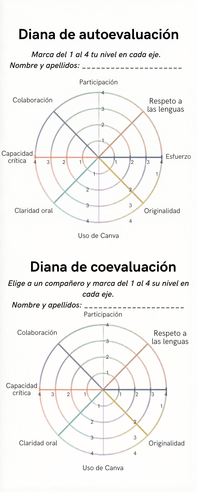

Texto
¡Tu trabajo está listo para ver la luz! Un periodista no escribe para sí mismo, sino para generar un impacto en la sociedad. En esta fase final, publicaremos nuestras crónicas en nuestro padlet y aprenderemos de las historias de nuestros compañeros y compañeras.
¿Cómo la comparto?
Sigue estos pasos técnicos para asegurar que tu crónica se vea correctamente:
- Haz clic en el botón "compartir" en Canva (esquina superior derecha) y en "descargar".
Formato: Selecciona "PDF para impresión" (si quieres la máxima calidad) o "PNG" (si prefieres que se vea como una imagen directa). - Ahora abre el Padlet haciendo clic en el enlace de la página "Banco de recursos".
- Pulsa el icono (+) para añadir una publicación y escribe tu nombre y el título de tu crónica en el asunto.
Sube el archivo que acabas de descargar.
Instrumento de evaluación: la diana
Un buen periodista también sabe leer y valorar el trabajo ajeno. Una vez que las crónicas estén publicadas:
- Lectura. Autoevalúa tu trabajo y coevalúa el de otro compañero. Deja un comentario que incluya:
- Un aspecto positivo: ¿Qué es lo que más te ha gustado de su historia o de su diseño?
- Una sugerencia de mejora: ¿Hay algo que no haya quedado claro? ¿Podría mejorar la ortografía o el uso de conectores?
- Recuerda la netiqueta: Tus comentarios deben ser siempre respetuosos, constructivos y centrados en el trabajo, nunca en la persona.
Aquí tienes la diana de evaluación que usarás.
